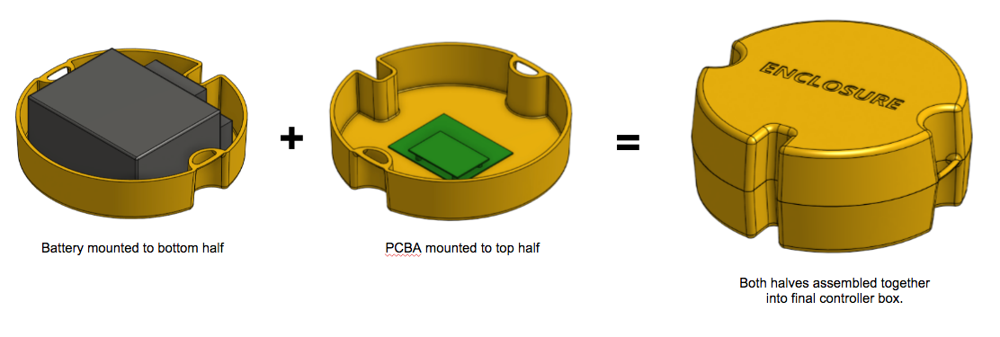

Injection Molded Enclosure for Floating Electronics
04/26/2016

This project started from a concept for a local start-up. The engagement with the start-up didn't go through but I decided to take the concept further in order to learn more about injection molding design.
Note: No confidential details regarding either the start-up or their product have been included.
The goal of this project is to create a custom waterproof enclosure that can be used to store electronics for floating applications.
Features that I'm exploring:
- Molding a full enclosure as a split half in order to use a single mold
- Introducing sufficient draft of 3-5 degrees to ensure
- Gasket design along the edges to ensure that water cannot enter
- Screw holes designed into the enclosure in order to allow proper sealing
- Anchor points on the outside to tie into various structures